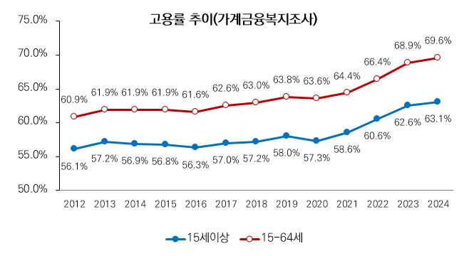
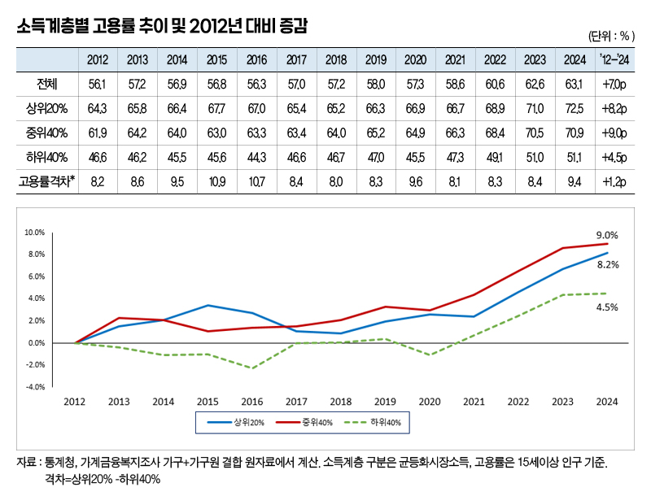
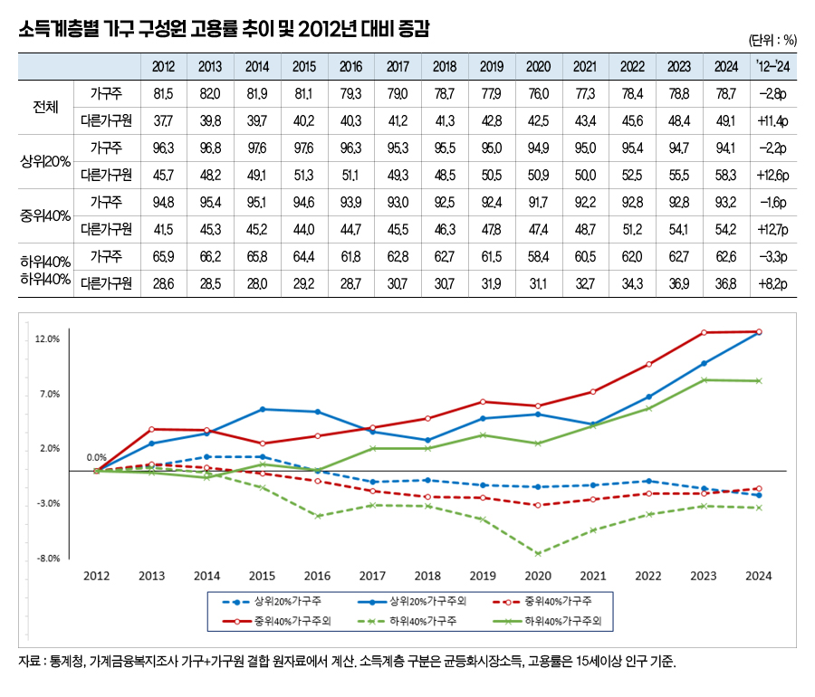

박영삼의 통계로 보는 노동
소득계층별 취업상태 분석 결과 … 저소득 가구 고용률 2023년 이후 ‘정체’
소득 불평등이 개선되기 위해서는 계층 간 시장소득 격차가 줄어들고 정부의 재분배 강화 정책이 동반해야 한다. 여기에 시장소득 격차를 완화하려면 저소득층의 고용률과 취업소득이 더 빨리 증가해야 한다. 고소득층과 저소득층 간 고용률 격차가 확대된다면 시장소득 불평등이 악화하고 있다는 신호다.
그런데 통계청에서 발표하는 고용통계는 일반적으로 연령과 성별을 중심으로 집계되기 때문에 가구소득에 따른 소득계층별 고용상황이 어떤지 확인할 수 없다. 이번에는 통계청의 가계금융복지조사 원자료를 활용해서 소득계층별로 가구원의 고용률이 어떻게 변화하고 있는지 알아보기로 한다. 분석자료는 가구소득 데이터에 가구원 정보를 결합한 것이다. 소득계층 구분은 취업상태와 연결되는 균등화시장소득을 기준으로 상위 20%와 중위 40%, 하위 40% 세 계층으로 구분했다.
가계금융복지조사로 계산한 지난해 기준 우리나라 전체 가구의 15세 이상 가구원의 고용률은 63.1%, 생산가능인구(15~64세) 고용률은 69.6%였다. 통계청의 공식 고용통계인 경제활동인구조사의 15세이상 전체 고용률 62.7%, 15~64세 고용률 69.5%와 일치하는 수준이라고 할 수 있다.

가계금융복지조사가 시작된 2012년 이후 고용률 추이를 가구소득 계층별로 확인해 보면 소득 상위 20% 가구의 고용률은 2012년 64.3%에서 지난해 72.5%로 12년 동안 8.2%포인트 상승했다. 중위 40% 가구는 61.9%에서 70.9%로 9.0%포인트 증가한 것으로 나타나 중위소득 가구의 고용률 상승이 가장 컸던 것으로 나타난다. 반면 하위 40% 가구는 56.1%에서 63.1%로 고용률이 4.5%포인트 상승했지만 증가폭은 가장 낮았다.
시기별로 보면 2016년 이전에는 상위 20% 가구의 고용률 증가폭이 가장 컸고, 하위 40%의 고용률은 하락하는 추세를 보였다. 이 시기에 소득계층 간 고용률 격차가 10.9%포인트로 가장 크게 벌어졌다. 이후 2017~2018년 기간 동안 계층간 고용률 갭이 크게 줄어드는데 고소득층 고용률은 하락하고 저소득층 고용률이 상승한 결과이다. 이 때 고용률 격차는 8.0%포인트까지 축소되었다. 그러나 코로나 팬데믹 때 저소득층은 고용률이 크게 하락한 반면(47.0%→45.5%) 상위 20%의 고용률은 오히려 증가하면서(66.3%→66.9%) 고용률 격차가 9.6%포인트로 다시 커진 것으로 나타난다. 이어 2021년 이후에는 저소득층 고용률 회복에 힘입어 격차가 줄어들기는 했지만, 2023년 이후 저소득층 고용률 회복이 주춤하는 동안 고소득층의 고용률은 계속 상승해 격차가 다시 9.4%포인트로 커진 상태다.

그런데 소득계층 간 고용률 격차가 확대된 시기와 소득분배지표가 악화된 시기가 대체로 일치하는 것으로 나타났다. 특히 저소득층 고용률 하락은 소득분배 악화의 뚜렷한 신호가 된다. 실제로 2015~2016년 시장소득 지니계수는 0.396에서 0.402, 0.406으로 악화했고, 2020년에도 전년도의 0.404에서 0.405로 악화했다. 계층 간 고용률 격차가 커진 것이 시장소득 분배지표 악화의 원인이라고 할 수 있다.
주목할 것은 최저임금이 크게 인상됐던 2017~2019년 중위 40% 가구의 고용률이 크게 상승했고 저소득층 가구의 고용률도 완만하게 상승했다는 점이다. 고용률이 하락한 것은 상위 20% 가구(65.4%→65.2%)였다.
이와 함께 눈여겨볼 필요가 있는 사실은 최근 10여년간 가구주의 고용률은 추세적으로 감소하고 있는 반면 배우자와 자녀 등 2차 소득자(secondary earner)의 고용률이 매우 뚜렷하게 증가하면서 지금까지의 고용률 상승을 주도하고 있다는 점이다.
81.5%였던 2012년 가구주 고용률은 지난해 78.7%로 2.8%포인트 하락했지만 배우자와 자녀 등 다른 가구원의 고용률이 무려 11.4%포인트나 상승했다. 특히 같은 기간 상위 20% 가구는 가구주의 고용률이 2.2%포인트 하락했지만 다른 가구원의 고용률이 12.6%포인트 상승했고, 중위 40% 가구도 가구주의 고용률이 1.6%포인트 하락한 것을 가구원의 고용률 상승 12.7%로 크게 반전시켰다. 반면 하위 40% 가구는 가구주의 고용률 감소폭이 -3.3%포인트로 가장 큰 컸지만 가구원의 고용률 상승폭은 8.2%포인트에 그쳤다.

시기별로 보면 2016년 이전까지는 상위 20% 가구에서 가구주와 가구원의 고용률이 동반상승하는 모습을 보인 반면, 하위 40% 가구는 가구주의 고용률 하락이 큰 상태에서 가구원의 고용률 상승은 미미한 모습을 보였다. 2017~2019년 하위 40% 가구의 가구주와 가구원 고용률이 동반 상승한 반면 고소득 가구의 가구원 고용률은 크게 하락한 시기였다. 한편 코로나 시기에는 저소득과 중위소득 가구의 고용률이 모두 하락하는 양상을 보이면서 저소득 가구주의 고용률이 가장 큰 폭으로 감소했는데, 고소득 가구의 가구원 고용률만 상승하는 예외적인 현상이 나타났다. 최근에도 저소득 가구주와 가구원의 고용률이 정체 상태를 보이고 있는 반면, 고소득 가구의 가구원 고용률은 여전히 큰 폭의 상승세를 유지하고 있다.
이번에 그동안 잘 살펴보지 않았던 소득수준별 고용률 변화를 점검해본 결과 저소득층 가구의 고용률 정체 현상을 확인할 수 있었다. 현재와 같은 흐름이 계속된다면 그 결과는 시장소득 분배 악화로 나타날 것이고 이를 보완하기 위한 재분배 정책이 감당해야할 부담은 훨씬 더 커질 수 있다. 이재명 정부의 일자리 정책에서 저소득층을 보다 적극적으로 고려하는 노력이 필요한 시점이다.
고려대 노동문제연구소 노동데이터센터장 (youngsampk@gmail.com)